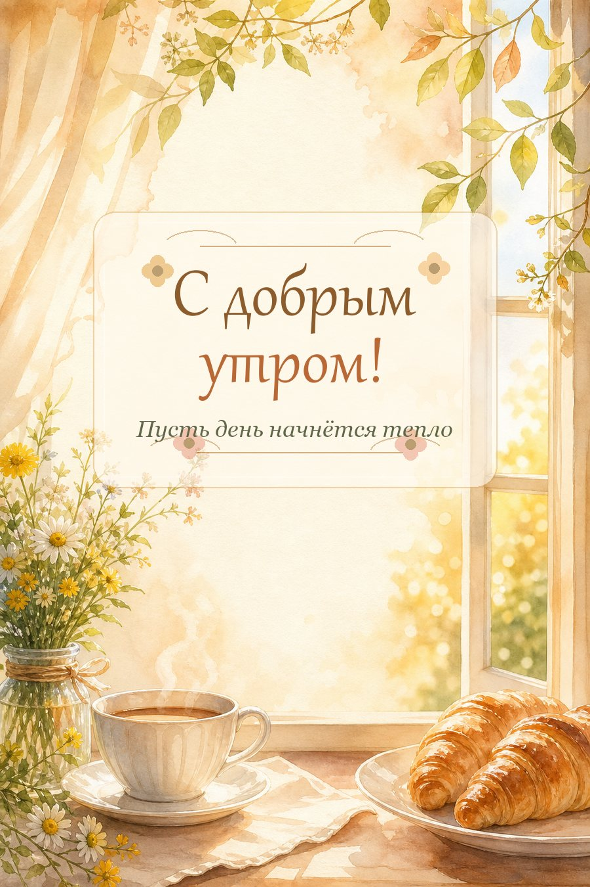

Промтзилла
Как создать открытку «С добрым утром» через ИИ
Создай красивую утреннюю открытку без вставки лица: мягкий свет, цветы, кофе или чай, окно, уютная атмосфера и аккуратная надпись «С добрым утром!».
Пошаговая инструкция
- 1Определи настроение открытки: уютное утро дома, кофе у окна, цветы, солнечный свет или спокойный утренний пейзаж.
- 2Открой GPT Image 2 или Nano Banana PRO и вставь промпт ниже.
- 3Попроси сделать вертикальную открытку без людей и без вставки лица.
- 4Укажи точную надпись: «С добрым утром!» и попроси сделать её крупной, ровной и читаемой.
- 5Если текст получился криво, попроси перерисовать только надпись и не менять композицию.
- 6Выбери вариант, где утро выглядит тёплым, чистым и праздничным, без лишних деталей.
Пример результата

РезультатИИ создаёт светлую утреннюю открытку без вставки лица: окно, цветы, кофе и мягкое солнце.
Промт
RU
Создай красивую вертикальную открытку «С добрым утром!» без людей и без вставки лица. Сюжет: — уютное утро у окна — мягкий солнечный свет — чашка кофе или чая — цветы, лёгкие листья, свежий воздух — можно добавить круассаны, книгу, плед или красивый столик Текст на открытке: «С добрым утром!» Стиль: — нежная акварельная или рисованная открытка — тёплая палитра: кремовый, золотистый, персиковый, мягкий зелёный — красивый читаемый шрифт — аккуратная декоративная рамка или лёгкие цветочные элементы Требования: — не добавляй людей, лица и портреты — не вставляй ничьё лицо в открытку — текст должен быть написан ровно, без ошибок и крупно — композиция должна выглядеть как готовая открытка для мессенджера или соцсетей — без водяных знаков, логотипов и лишних случайных надписей
EN
Create a beautiful vertical "Good morning!" greeting card without people and without inserting any face. Scene: - cozy morning near a window - soft sunlight - cup of coffee or tea - flowers, light leaves, fresh morning air - optional croissants, book, blanket or elegant small table Text on the card: "Good morning!" Style: - delicate watercolor or hand-drawn greeting card - warm palette: cream, golden, peach, soft green - beautiful readable typography - subtle decorative frame or floral elements Requirements: - no people, no faces and no portraits - do not insert anyone's face into the card - the text must be clean, correctly written and large enough to read - the composition should look like a finished card for messengers or social media - no watermarks, logos or random extra text
Теги
Эту страницу можно использовать онлайн: промпт подходит для работы с ИИ и нейросетью.